Pedagogy of the Oppressed
Buku ini membahas pendidikan sebagai sarana untuk membangun kesadaran dan kemampuan berpikir kritis. Freire menjelaskan pentingnya hubungan dialogis antara pendidik dan peserta didik agar pembelajaran tidak hanya bersifat satu arah.
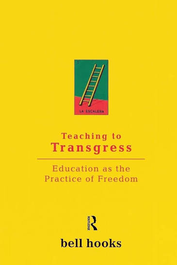
Teaching to Transgress
Membahas pendidikan sebagai praktik kebebasan. Buku ini menekankan pentingnya kelas yang terbuka, dialogis, dan mendorong peserta didik untuk berpikir kritis serta aktif dalam proses pembelajaran.
Democracy and Education
Dewey menjelaskan bahwa pendidikan berkaitan erat dengan kehidupan masyarakat. Belajar tidak hanya tentang memperoleh pengetahuan, tetapi juga melalui pengalaman dan keterlibatan seseorang dalam kehidupan sosial.
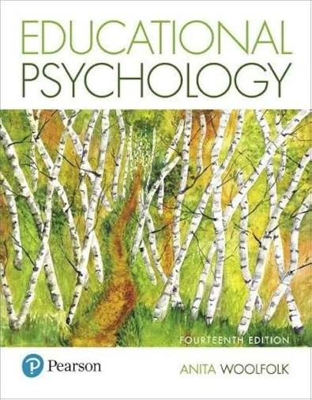
Educational Psychology
Buku ini membahas penerapan psikologi dalam pendidikan. Isinya mencakup perkembangan peserta didik, motivasi, proses belajar, perbedaan individu, pengelolaan kelas, dan strategi pembelajaran.
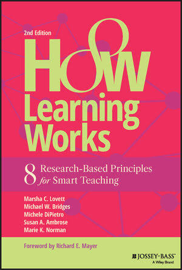
How Learning Works
Buku ini menjelaskan prinsip-prinsip utama tentang bagaimana manusia belajar berdasarkan penelitian. Pembahasannya dapat membantu pendidik memahami faktor yang memengaruhi keberhasilan proses belajar.
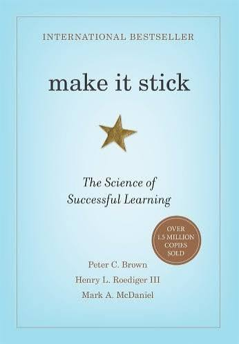
Make It Stick
Membahas cara belajar yang dapat membuat pengetahuan lebih mudah dipahami dan diingat. Buku ini menggunakan hasil penelitian tentang memori dan pembelajaran untuk menjelaskan strategi belajar yang efektif.
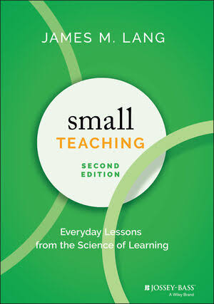
Small Teaching
Buku ini menawarkan berbagai perubahan sederhana dalam kegiatan mengajar yang dapat diterapkan oleh guru maupun dosen. Fokusnya adalah meningkatkan pembelajaran melalui langkah-langkah kecil yang didukung penelitian.
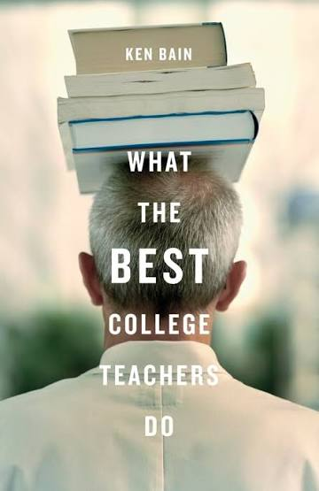
What the Best College Teachers Do
Buku ini membahas kebiasaan dan praktik para dosen yang berhasil menciptakan pengalaman belajar yang mendalam. Pembahasannya menekankan pentingnya pertanyaan, pemikiran kritis, dan keterlibatan mahasiswa.
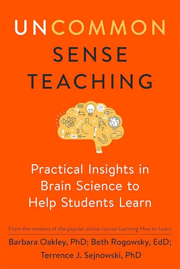
Uncommon Sense Teaching
Buku ini menghubungkan ilmu tentang otak dan proses kognitif dengan kegiatan mengajar. Pembaca diajak memahami perhatian, memori, motivasi, dan cara menyusun pembelajaran yang lebih efektif.
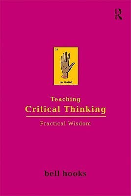
Teaching Critical Thinking
Buku ini membahas pentingnya kemampuan berpikir kritis dalam pendidikan. Peserta didik didorong untuk mempertanyakan informasi, mengembangkan pemikiran mandiri, dan menghubungkan pembelajaran dengan pengalaman kehidupan.
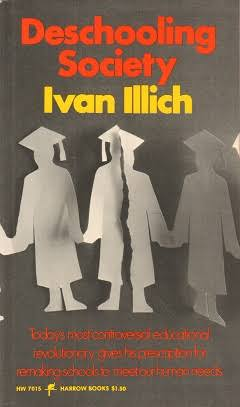
Deschooling Society
Illich mengkritisi sistem pendidikan formal dan ketergantungan masyarakat terhadap sekolah. Buku ini mengajak pembaca memikirkan kembali cara manusia memperoleh pengetahuan dan kesempatan belajar di luar lembaga pendidikan formal.
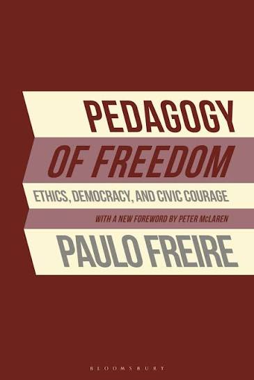
Pedagogy of Freedom
Buku ini membahas hubungan antara pendidikan, kebebasan, etika, dan tanggung jawab. Freire menekankan bahwa pendidikan perlu membantu peserta didik menjadi manusia yang mampu berpikir dan bertindak secara bertanggung jawab.
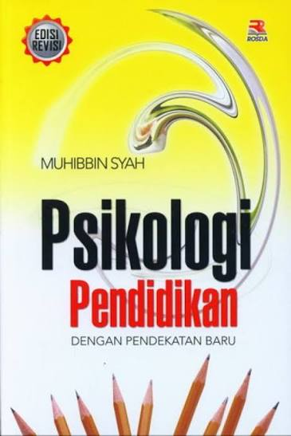
Psikologi Pendidikan dengan Pendekatan Baru
Buku ini membahas berbagai konsep psikologi yang berhubungan dengan pendidikan dan pembelajaran. Materinya membantu memahami perilaku peserta didik serta faktor psikologis yang memengaruhi proses belajar.
Belajar dan Faktor-Faktor yang Mempengaruhinya
Buku ini membahas pengertian belajar serta faktor-faktor yang memengaruhi keberhasilan belajar. Pembahasannya mencakup faktor dari dalam diri peserta didik maupun lingkungan keluarga, sekolah, dan masyarakat.
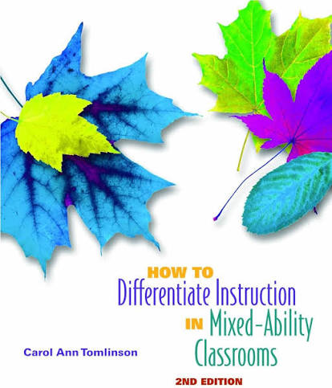
How to Differentiate Instruction in Mixed-Ability Classrooms
Buku ini membahas pembelajaran berdiferensiasi, yaitu cara guru menyesuaikan pembelajaran dengan kebutuhan, kemampuan, minat, dan kesiapan peserta didik yang berbeda-beda dalam satu kelas.
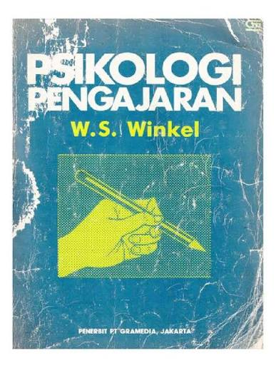
Psikologi Pengajaran
Buku ini membahas aspek psikologis dalam kegiatan pengajaran. Materinya membantu memahami proses belajar, perkembangan peserta didik, serta peran pendidik dalam menciptakan proses pembelajaran yang mendukung perkembangan siswa.